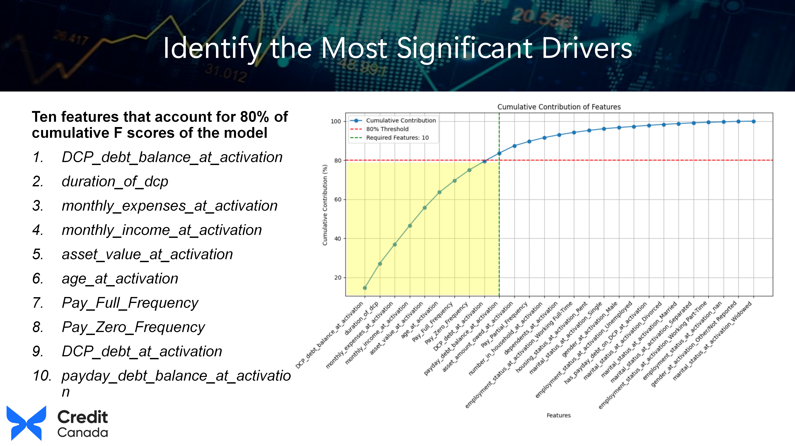
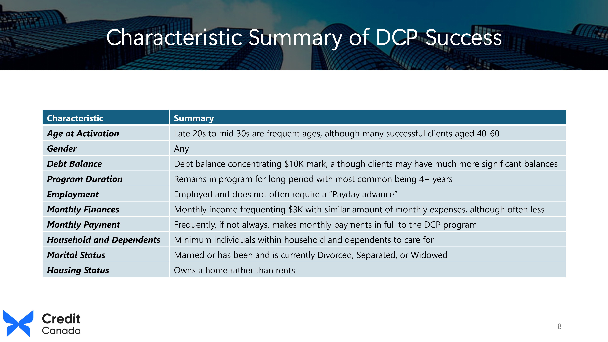
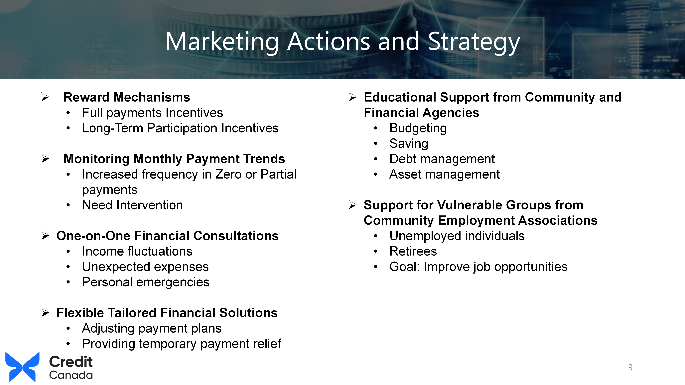
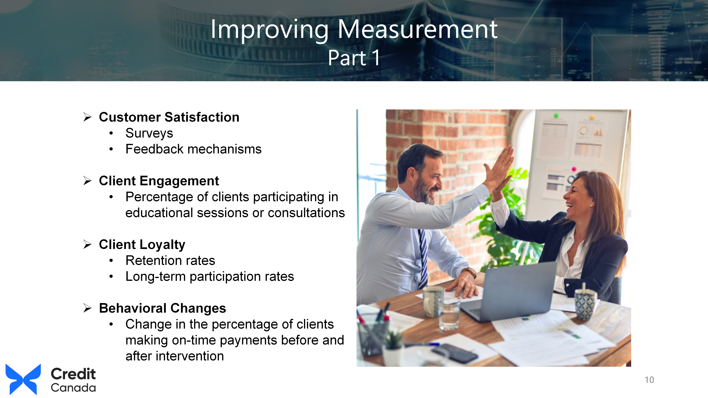
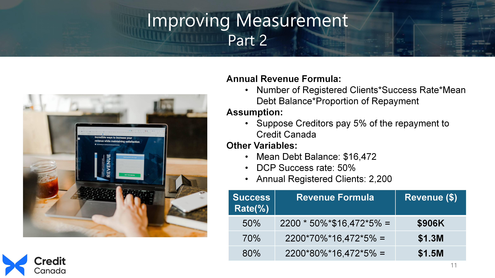

Data-Driven Decisions to Improve Debt Program Success
Context & Problem
Credit Canada's Debt Consolidation Program (DCP) helps clients repay debt at low or no interest, but only about 50% of the ~2,200 clients who enroll each year complete it. Credit Canada had rich client data but no model connecting it to outcomes — leaving them unable to identify who was likely to succeed or design interventions for who wasn't.
My Role
Co-lead on a six-person graduate Marketing Analytics team, contributing across data analysis, business strategy, and presentation.
Analysis & Model Selection
I cleaned and engineered a dataset of ~3,500 historical DCP records, tested four modeling approaches, and selected XGBoost as the production model (F1 0.80/0.85, ROC-AUC 0.89).
SHAP analysis ranked the top 10 drivers of success: debt balance, program duration, income/expenses, payment consistency, age, and employment status.


Identifying Drivers
From Insight to Decision
Rather than one blanket fix, we segmented clients into three response tiers: rewards for clients on track, proactive intervention (consultations, flexible payment plans) triggered by early warning signs like rising missed payments, and targeted support for structurally vulnerable segments like the unemployed.
We proposed four KPIs — satisfaction, engagement, retention, behavioral change — so success could be measured, not assumed.

Segmentation Strategy
Outcomes
A validated predictive model (ROC-AUC 0.89) and a segmented intervention strategy with proposed KPIs and a revenue-impact case, presented at the course's applied analytics capstone:
- XGBoost model with F1 score 0.80/0.85 and ROC-AUC 0.89
- Identified top 10 success drivers through SHAP analysis
- Three-tier client segmentation strategy with targeted interventions
- Four measurable KPIs for program success tracking
- Revenue-impact business case tied to funding model


Measurable Metrics